HOME PLACES FOOD
LUZON:
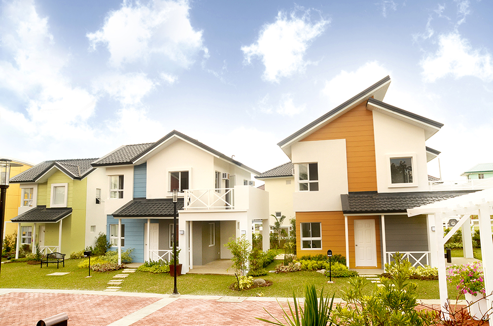 |
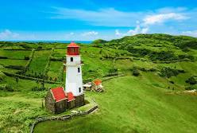 |
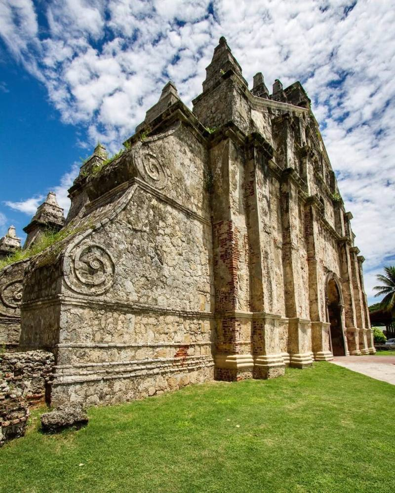 |
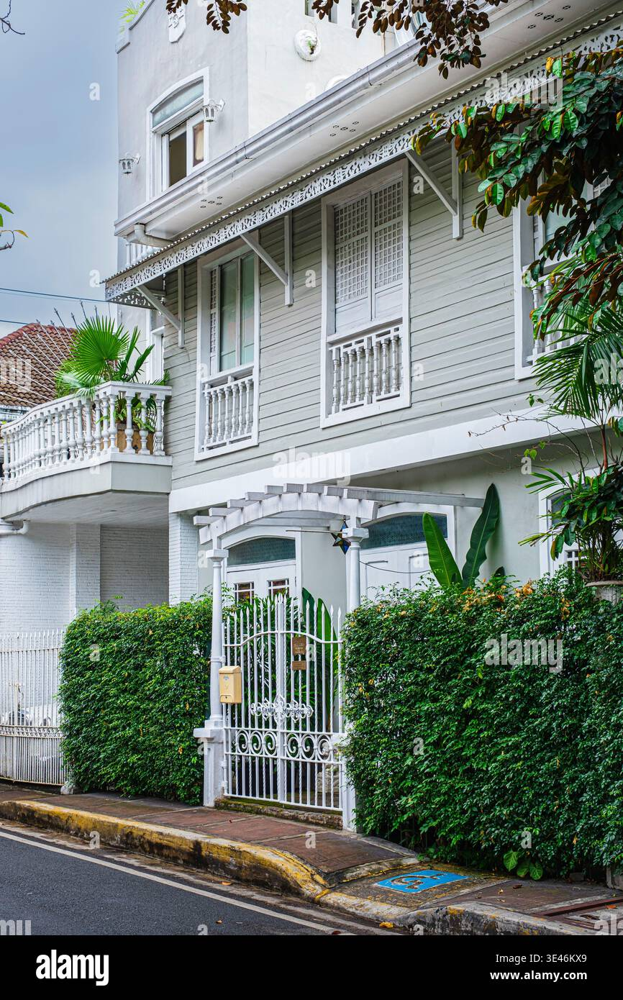 |
 |
Northpine landDescription: several model houses in Wind Crest, a 6.4-hectare residential community |
Mahatao tayid lighthouseDescription: the Tayid Lighthouse, a prominent landmark situated on the rolling hills of Mahatao |
Saint augustine parish churchDescription: features the Saint Augustine Parish Church, more commonly known as Paoay Church |
La Casita mercedesDescription: restored pre-war colonial heritage house located at 5956 Enriquez corner Fermina Streets in the Poblacion neighborhood of Makati, Metro Manila, Philippines.. |
The glass houseDescrcription: real estate landscape, ranging from mid-century tropical homes and master-planned suburban subdivisions to ultra-luxury metropolitan villas |
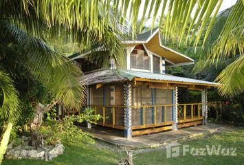 |
 |
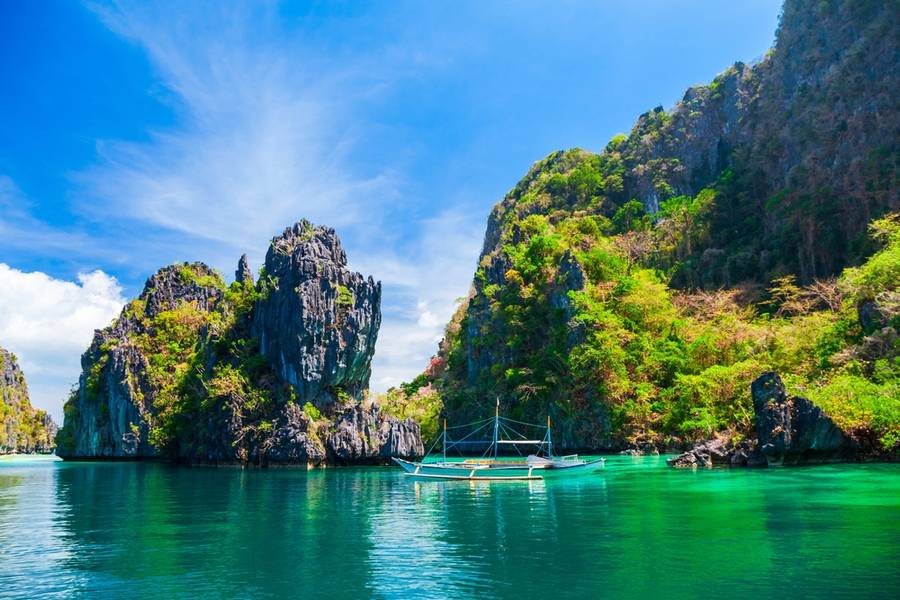 |
 |
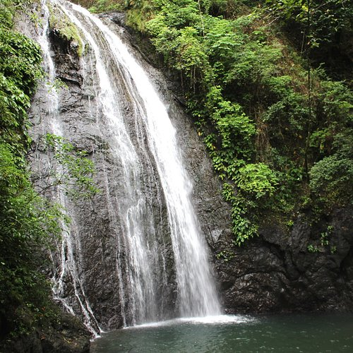 |
|---|---|---|---|---|
Bahay kuboDescription: depicts a 1-bedroom rustic beachfront house for rent in Larena, Siquijor, Philippines. This double-story, gallery-type home is marketed as a dreamhouse for long-term residents, pensioners, or expats. |
Bohol central visayasDescription: diverse landscapes, rich cultural heritage, and pristine beaches |
PalawanDescription: Palawan province of the Philippines. It features a traditional Filipino outrigger boat, known as a bangka or banca, anchored in crystal-clear turquoise waters. |
Sirao GardenDescription: famous Instagram-worthy photo spot located in Sirao Garden (also known as the "Little Amsterdam" of Cebu) in Cebu City, Philippines. |
Bugtong bato fallsDescription :multi-tiered natural attraction located in Barangay Tuno, Tibiao, Antique, Philippines. |
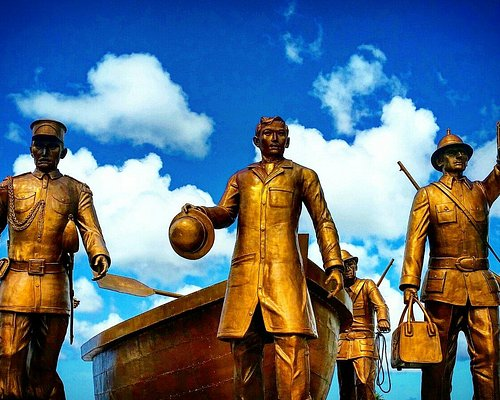 |
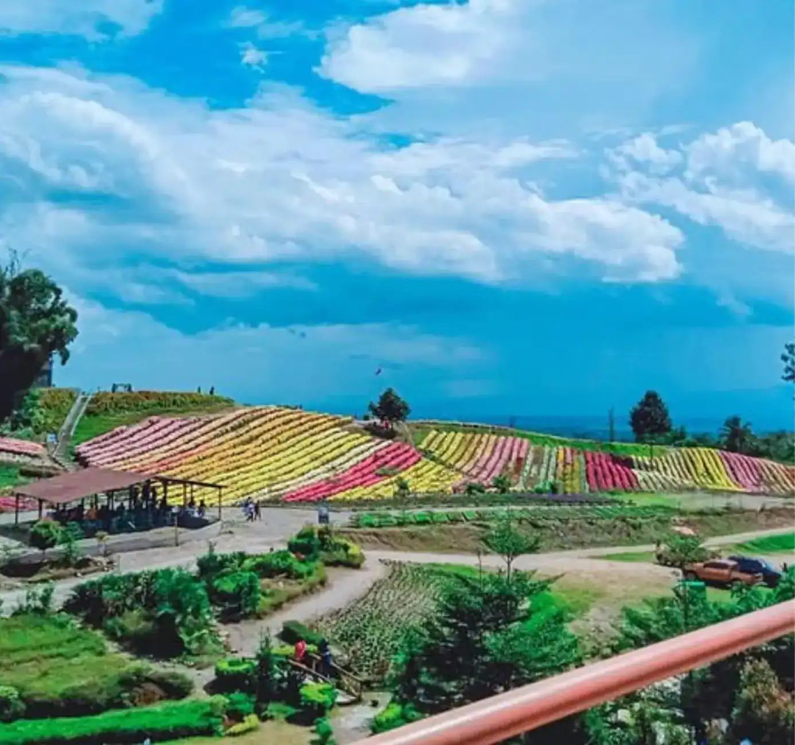 |
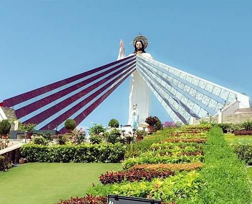 |
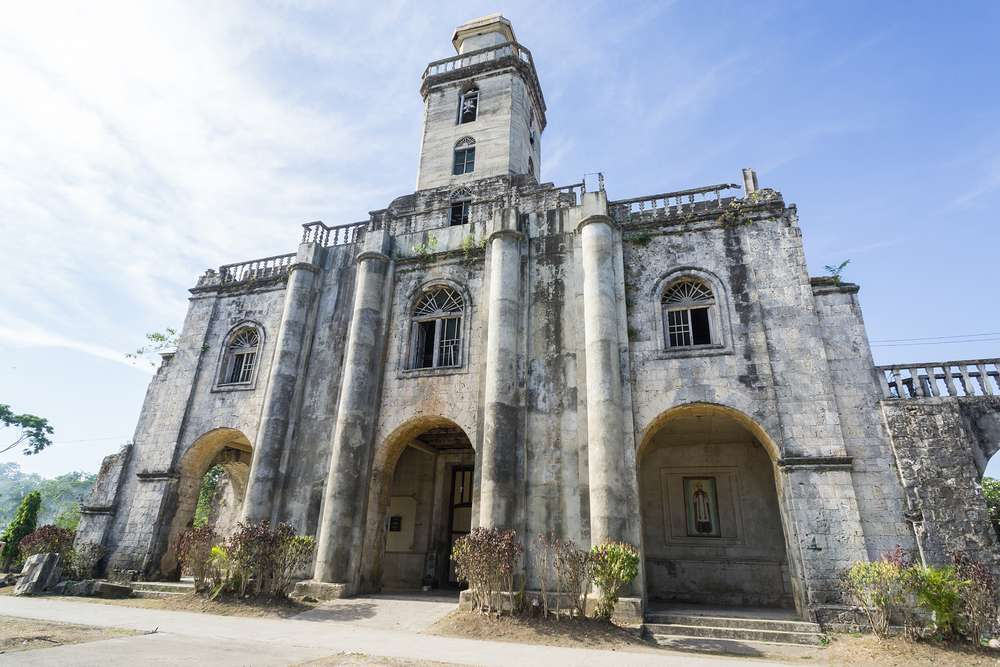 |
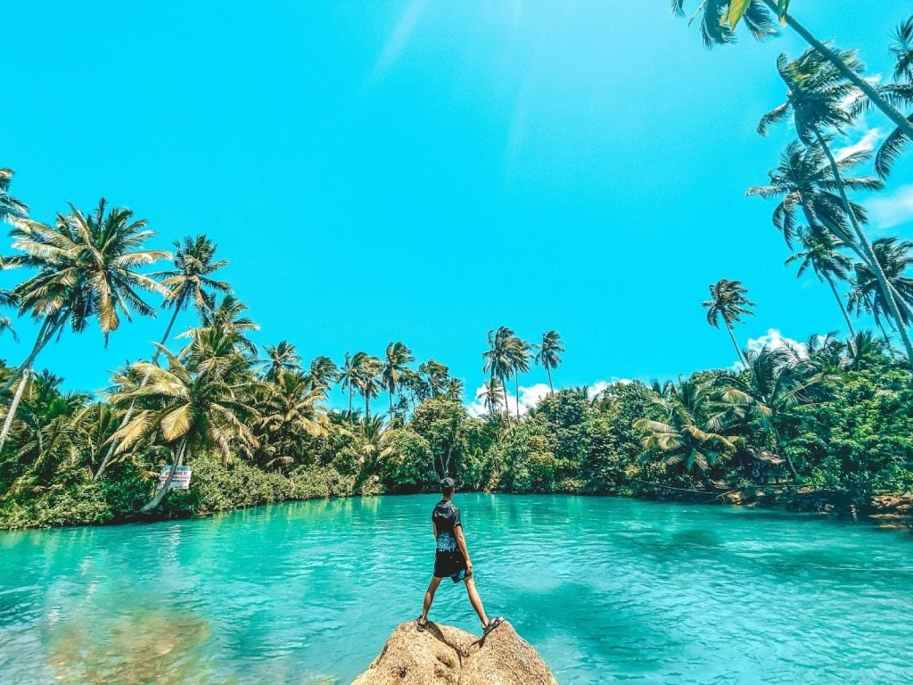 |
Rizal MunomentDescrption: The monument features life-sized bronze statues designed by architect Antonio Tuviera and installed by sculptor Ronel Roces. It depicts the following figures from that night:Dr. Jose Rizal: The central figure shown disembarking.Captain Delgras: The ship's captain who accompanied Rizal to the shore.Three Artillery Men: Soldiers who guarded Rizal; one is famously depicted holding a farol de combate (combat lantern) to light their way through the dark to the Casa Real. |
Eden's flower farmDescription:If you enjoy this aesthetic, several other highland flower parks offer comparable views:Eden Flower Garden (South Cotabato): Known for its "Memories of Eden" trails, though some reports indicate it may currently be under renovation or closed.Buwakan ni Alejandra (Cebu): A well-maintained botanical garden in Balamban featuring similar terraced floral displays.Landingan Viewpoint (Quirino): Offers rolling hills and colorful flowers often compared to the landscapes of Batanes.Northern Blossoms (Benguet): Located in Atok, this farm features highland blooms that sit high above the clouds at over 2,100 meters sea level. |
Mindanao accessibilityDescription:Location: Situated in Baganga, Davao Oriental, within the Davao Region of Mindanao.Accessibility: It is located just a few steps from the highway. Nearby attractions include Langoyon Beach Resort, San Victor Island, Poo Sandbar, and Curtain Falls.Fees: Entrance fees are approximately P100 per person, with parking fees ranging from P10 to P30. |
san salvador del mundo churchDescription:Constructed primarily of coral stones, the current stone structure was founded in 1842 and is recognized as one of the oldest stone churches in the country. Before the stone edifice, the church was built using wood and bamboo |
Carolina lakeDescription:Entrance Fee: Typically around P100 per person.Amenities: Visitors can rent cottages (ranging from P200-350), tables (P100-150), life jackets, and boats or "balsas" (rafts) for use on the lake.Travel Tip: Due to its popularity, it is recommended to book cottages up to two weeks in advance to ensure availability. |